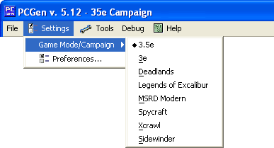

The Game Mode/Campaign option allows the user to select what rule set and generation method will be used when generating your character.

As of now PCGen supports these following Game Modes:
Once you select a Game Mode/Campaign the GAMEMODE Tag in the source .pcc files under the Data folder will determine if the sources show up for a given Game Mode.